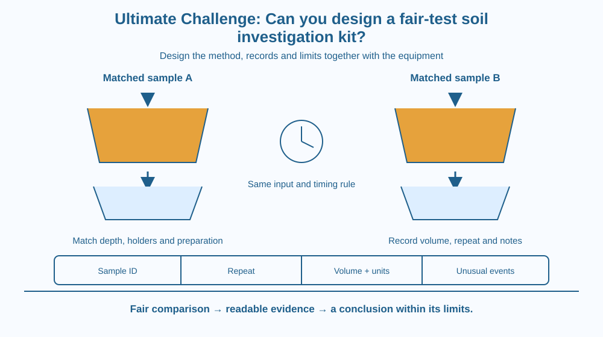

Design a compact kit and procedure for comparing how clean soil samples handle water. Integrate ideas about pores, volume readings, repeated timings and careful classification. Your product is a fair-test investigation system, not a claim that one short test identifies the universally best soil.
A school garden team receives two clean soil samples labelled A and B. The team wants to compare water passing through them, but its first trial uses different containers, unequal sample depths and different amounts of water. The result appears dramatic, yet nobody can tell which difference caused it.
Your challenge is to design the kit before trusting the comparison. Good equipment is only part of the answer. The samples, procedure, records and limits must fit together so another group can repeat the investigation and understand what was actually measured.
Begin with a specific investigation question: under matched preparation conditions, how much water emerges from each sample during the same observation interval? This is narrower and more testable than “Which soil is best?” It avoids pretending that drainage alone measures fertility, plant suitability and cleanliness.
Identify the independent variable, the factor being compared: the identity of the soil sample. Identify the dependent variable, the recorded outcome: collected water volume after a defined time. Variables such as container geometry, sample depth, packing procedure and input water must be controlled as far as practical.
A sample's pore size and connectivity influence water movement. Texture, compaction, aggregates and channels can all matter. Therefore preparing samples differently can alter the result before the comparison even begins. A consistent preparation procedure is essential.
Choose an appropriate volume-reading method. A calibrated cylinder gives information that an arbitrarily marked cup does not. Read a water meniscus at eye level and record only useful precision. If the kit uses a kitchen measure, state that limitation rather than inventing millilitre accuracy.
Define the timing event. For example, start the observation when water is first added and stop at a stated elapsed interval. The exact convention matters more than choosing a supposedly magical interval. Every group must use the same one for a comparable result.
Use repeats, but think about what is being repeated. Pouring more water through an already wetted sample changes its starting condition. A fresh matched portion for each repeat better addresses independent trials, although the available material and kit size may limit what can be done.
Keep the individual results. A range shows observed variation, and a mean can summarise repeated comparable readings. Neither removes differences caused by poor preparation. A useful record includes both values and method notes.
Finally, do not call the collected water pure merely because it looks clear. The sample may release fine particles or dissolved substances. This kit studies transport through soil; it is not a drinking-water filter and does not certify safety.
Draw the kit as four linked parts: matched sample holders, measured water input, timed collection and a recording card. A missing link weakens the whole system. Excellent containers do not rescue unlabelled results, and a neat table does not rescue unequal water inputs.
Add a checklist before the trial and a results table after it. The first protects the comparison; the second preserves the evidence. Put a small uncertainty box beside the table for leaks, packing differences or delayed reading.
The design goal is traceability from each reported number back to a sample and procedure. Someone who did not watch the experiment should still be able to understand how the result was obtained.
The SVG shows two matched sample holders above separate collectors. The same measured input is directed toward each, and one timing symbol applies to both observation intervals.
A recording panel has spaces for sample identity, preparation notes, repeat number, collected volume and unusual events. A lower decision panel asks whether the procedure supports the claim being made. The picture connects equipment with evidence rather than presenting a decorative science-kit box.
The apparatus is schematic. Real holders must be stable, made from safe existing household equipment and used with adult supervision. Nothing in the diagram requires cut bottles or sharp tools.

A school garden needs decisions based on several properties, including water handling, nutrients, roots and local conditions. Your kit addresses only one part of that decision. A good report says what it can establish and which questions remain.
Comparable procedures matter when results are shared between classrooms. If one class packs samples firmly and another leaves them loose, combining their numbers without notes can hide a preparation difference. Labels and methods therefore travel with the data.
This challenge differs from designing a city or habitat. You are building a trustworthy way to investigate a small question, including the possibility that the available evidence does not support a confident ranking.
Use paper, a pencil and a few existing unbreakable kitchen containers to lay out a proposed kit. Do not run a dirty-water experiment during this planning activity.
The five minutes produce a prototype plan, not completed experimental evidence. Any later wet trial needs adult supervision, stable strainers or holders, handwashing and a rule against drinking collected water.
Imagine sample A produces slightly more collected water than B, but repeat results overlap substantially. What conclusion is justified? Explain why “A is definitely better” is stronger than the evidence supports.
Now suppose A has been packed firmly and B loosely. Would more repeated readings automatically repair the comparison? Identify the preparation problem that must be addressed before the numbers can answer the intended question.
Which outcome directly answers the proposed kit question?
Answer: B — The kit compares the measured water output under specified matched conditions.
Why use fresh matched sample portions for independent repeats?
Answer: A — Reusing an already wetted portion changes the conditions and weakens independence.
A and B differ only slightly and repeat results overlap. What is the best report?
Answer: C — Small differences relative to observed variation do not justify a universal confident ranking.
Deliver a one-page kit specification containing a labelled layout, safe materials list, preparation procedure, measurement convention and recording table. Include a clear investigation question and one example of a claim the kit cannot establish.
Then peer-review the design against four criteria: fairness, readability, repeatability and safe handling. Revise one feature after feedback. Your final product should make a future experiment more trustworthy, rather than simply making its equipment look impressive.
A useful investigation can end without declaring a winner. If variation is large or the method has an unresolved difference, identifying that limitation is a valid result of the design process. The kit succeeds when it reveals what the evidence supports, including where the comparison needs improvement.
A fair-test kit links matched preparation, clear measurements, repeat records and limited claims; equipment alone cannot make a comparison trustworthy.